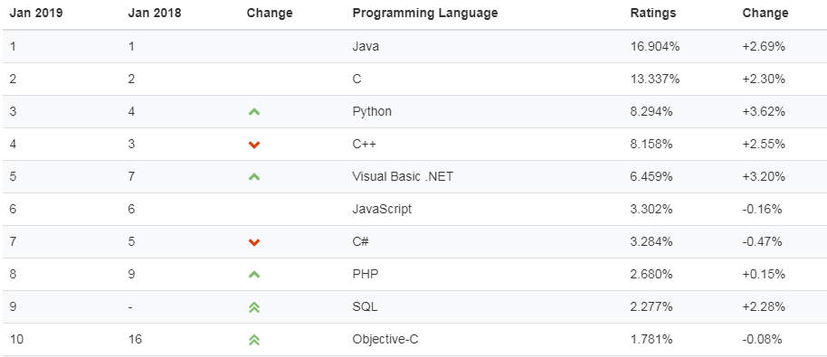

首页 > Java教程 > Java入门基础及环境搭建
Java是什么？Java的特点有哪些？
Java 是近 10 年来计算机软件发展过程中的传奇，其在众多开发者心中的地位可谓“爱不释手”，与其他一些计算机语言随着时间的流逝影响也逐渐减弱不同，Java 随着时间的推移反而变得更加强大。
从首次发布开始，Java 就跃到了 Internet 编程的前沿。后续的每一个版本都进一步巩固了这一地位。如今，Java 依然是开发基于 Web 的应用程序的最佳选择。此外，Java 还是智能手机变革的推手，Android 编程采用的就是 Java 语言。
其实，Java 还是一个平台。Java 平台由 Java 虚拟机（Java Virtual Machine，JVM）和 Java 应用编程接口（Application Programming Interface，API）构成。Java 应用编程接口为此提供了一个独立于操作系统的标准接口，可分为基本部分和扩展部分。在硬件或操作系统平台上安装一个 Java 平台之后，Java 应用程序就可运行。
Java 平台已经嵌入了几乎所有的操作系统。这样 Java 程序只编译一次，就可以在各种系统中运行。Java 应用编程接口已经从 1.1x 版本发展到 1.2 版本。常用的 Java 平台基于 Java 1.6，最新版本为 Java 1.8。
Java 发展至今，就力图使之无所不能。在世界编程语言排行榜中，近年来 Java 一直稳居第一名，比第二名的C语言高出几个百分点。
按应用范围，Java 可分为 3 个体系，即 Java SE、Java EE 和 Java ME。下面简单介绍这 3 个体系。
Java ME 包括灵活的用户界面、健壮的安全模型、丰富的内置网络协议以及对可以动态下载的联网和离线应用程序。基于 Java ME 规范的应用程序 只需编写一次就可以用于许多设备，而且可以利用每个设备的本机功能。
Java 语言是一种分布式的面向对象语言，具有面向对象、平台无关性、简单性、解释执行、多线程、安全性等很多特点，下面针对这些特点进行逐一介绍。
Java 语言使用 Java 虚拟机机制屏蔽了具体平台的相关信息，使得 Java 语言编译的程序只需生成虚拟机上的目标代码，就可以在多种平台上不加修改地运行。
Java 语言的众多特性使其在众多的编程语言中占有较大的市场份额，Java 语言对对象的支持和强大的 API 使得编程工作变得更加容易和快捷，大大降低了程序的开发成本。Java 的“一次编写，到处执行”正是它吸引众多商家和编程人员的一大优势。
从首次发布开始，Java 就跃到了 Internet 编程的前沿。后续的每一个版本都进一步巩固了这一地位。如今，Java 依然是开发基于 Web 的应用程序的最佳选择。此外，Java 还是智能手机变革的推手，Android 编程采用的就是 Java 语言。
什么是Java语言
简单地说，Java 是由 Sun Microsystems 公司于 1995 年推出的一门面向对象程序设计语言。2010 年 Oracle 公司收购 Sun Microsystems，之后由 Oracle 公司负责 Java 的维护和版本升级。其实，Java 还是一个平台。Java 平台由 Java 虚拟机（Java Virtual Machine，JVM）和 Java 应用编程接口（Application Programming Interface，API）构成。Java 应用编程接口为此提供了一个独立于操作系统的标准接口，可分为基本部分和扩展部分。在硬件或操作系统平台上安装一个 Java 平台之后，Java 应用程序就可运行。
Java 平台已经嵌入了几乎所有的操作系统。这样 Java 程序只编译一次，就可以在各种系统中运行。Java 应用编程接口已经从 1.1x 版本发展到 1.2 版本。常用的 Java 平台基于 Java 1.6，最新版本为 Java 1.8。
Java 发展至今，就力图使之无所不能。在世界编程语言排行榜中，近年来 Java 一直稳居第一名，比第二名的C语言高出几个百分点。

按应用范围，Java 可分为 3 个体系，即 Java SE、Java EE 和 Java ME。下面简单介绍这 3 个体系。
1. Java SE
Java SE（Java Platform Standard Edition，Java 平台标准版）以前称为 J2SE，它允许开发和部署在桌面、服务器、嵌入式环境和实时环境中使用的 Java 应用程序。Java SE 包含了支持 Java Web 服务开发的类，并为 Java EE 提供基础，如 Java 语言基础、JDBC 操作、I/O 操作、网络通信以及多线程等技术。图 1 所示为 Java SE 的体系结构。
2. Java EE
Java EE（Java Platform Enterprise Edition，Java 平台企业版）以前称为 J2EE。企业版本帮助开发和部署可移植、健壮、可伸缩且安全的服务器端 Java 应用程序。Java EE 是在 Java SE 基础上构建的，它提供 Web 服务、组件模型、管理和通信 API，可以用来实现企业级的面向服务体系结构（Service Oriented Architecture，SOA）和 Web 2.0 应用程序。3. Java ME
Java ME（Java Platform Micro Edition，Java 平台微型版）以前称为 J2ME，也叫 K-JAVA。 Java ME 为在移动设备和嵌入式设备（比如手机、PDA、电视机顶盒和打印机）上运行的应用程序提供一个健壮且灵活的环境。Java ME 包括灵活的用户界面、健壮的安全模型、丰富的内置网络协议以及对可以动态下载的联网和离线应用程序。基于 Java ME 规范的应用程序 只需编写一次就可以用于许多设备，而且可以利用每个设备的本机功能。
Java语言的特点
Java 语言的风格很像 C 语言和 C++ 语言，是一种纯粹的面向对象语言，它继承了 C++ 语言面向对象的技术核心，但是拋弃了 C++ 的一些缺点，比如说容易引起错误的指针以及多继承等，同时也增加了垃圾回收机制，释放掉不被使用的内存空间，解决了管理内存空间的烦恼。Java 语言是一种分布式的面向对象语言，具有面向对象、平台无关性、简单性、解释执行、多线程、安全性等很多特点，下面针对这些特点进行逐一介绍。
1. 面向对象
Java 是一种面向对象的语言，它对对象中的类、对象、继承、封装、多态、接口、包等均有很好的支持。为了简单起见，Java 只支持类之间的单继承，但是可以使用接口来实现多继承。使用 Java 语言开发程序，需要采用面向对象的思想设计程序和编写代码。2. 平台无关性
平台无关性的具体表现在于，Java 是“一次编写，到处运行（Write Once，Run any Where）”的语言，因此采用 Java 语言编写的程序具有很好的可移植性，而保证这一点的正是 Java 的虚拟机机制。在引入虚拟机之后，Java 语言在不同的平台上运行不需要重新编译。Java 语言使用 Java 虚拟机机制屏蔽了具体平台的相关信息，使得 Java 语言编译的程序只需生成虚拟机上的目标代码，就可以在多种平台上不加修改地运行。
3. 简单性
Java 语言的语法与 C 语言和 C++ 语言很相近，使得很多程序员学起来很容易。对 Java 来说，它舍弃了很多 C++ 中难以理解的特性，如操作符的重载和多继承等，而且 Java 语言不使用指针，加入了垃圾回收机制，解决了程序员需要管理内存的问题，使编程变得更加简单。4. 解释执行
Java 程序在 Java 平台运行时会被编译成字节码文件，然后可以在有 Java 环境的操作系统上运行。在运行文件时，Java 的解释器对这些字节码进行解释执行，执行过程中需要加入的类在连接阶段被载入到运行环境中。5. 多线程
Java 语言是多线程的，这也是 Java 语言的一大特性，它必须由 Thread 类和它的子类来创建。Java 支持多个线程同时执行，并提供多线程之间的同步机制。任何一个线程都有自己的 run() 方法，要执行的方法就写在 run() 方法体内。6. 分布式
Java 语言支持 Internet 应用的开发，在 Java 的基本应用编程接口中就有一个网络应用编程接口，它提供了网络应用编程的类库，包括 URL、URLConnection、Socket 等。Java 的 RIM 机制也是开发分布式应用的重要手段。7. 健壮性
Java 的强类型机制、异常处理、垃圾回收机制等都是 Java 健壮性的重要保证。对指针的丢弃是 Java 的一大进步。另外，Java 的异常机制也是健壮性的一大体现。8. 高性能
Java 的高性能主要是相对其他高级脚本语言来说的，随着 JIT（Just in Time）的发展，Java 的运行速度也越来越高。9. 安全性
Java 通常被用在网络环境中，为此，Java 提供了一个安全机制以防止恶意代码的攻击。除了 Java 语言具有许多的安全特性以外，Java 还对通过网络下载的类增加一个安全防范机制，分配不同的名字空间以防替代本地的同名类，并包含安全管理机制。Java 语言的众多特性使其在众多的编程语言中占有较大的市场份额，Java 语言对对象的支持和强大的 API 使得编程工作变得更加容易和快捷，大大降低了程序的开发成本。Java 的“一次编写，到处执行”正是它吸引众多商家和编程人员的一大优势。
关注公众号「站长严长生」，在手机上阅读所有教程，随时随地都能学习。内含一款搜索神器，免费下载全网书籍和视频。

微信扫码关注公众号